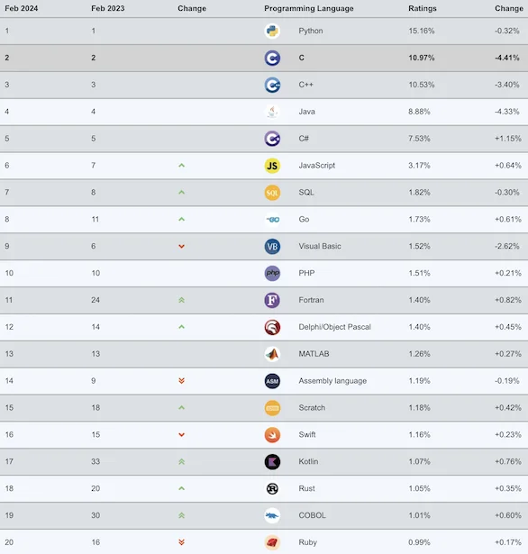

Aktuelle Standardtechnologien

Quelle: TIOBE Programming Community Index - April 2012

Ein erster Überblick.
michael.eichberg@dhbw.de, Raum 149B
1.0.0.1
https://delors.github.io/ds-architekturen/folien.de.md.html
https://delors.github.io/ds-architekturen/folien.de.md.html.pdf
Bei der Erstellung der Unterlagen wurden KI Assistenten (insbesondere Claude aber ggf. auch ChatGPT, Ollama mit Gemma/LLama/Qwen oder OpenCode mit Kimi/Qwen/Deepseek...) unterstützend eingesetzt. Dies erfolgte insbesondere zur Unterstützung bei der Generierung von Grafiken (d. h. SVG Dateien), oder um sich Übersichtstabellen generieren zu lassen. Weiterhin wurde KI zur allgemeinen Qualitätssicherung eingesetzt. Inhalte, die ggf. von der KI vorgeschlagen wurden, wurden im Falle der Übernahme explizit validiert und angepasst.
Ein Architekturstil wird formuliert in Form von
(austauschbare) Komponenten mit klar definierten Schnittstellen
der Art und Weise, wie die Komponenten miteinander verbunden sind
die zwischen den Komponenten ausgetauschten Daten
der Art und Weise, wie diese Komponenten und Verbindungen gemeinsam zu einem System konfiguriert werden System.
Konnektor
Ein Mechanismus, der die Kommunikation, Koordination oder Kooperation zwischen Komponenten vermittelt. Beispiel: Einrichtungen für (entfernte) Prozeduraufrufe (RPC), Nachrichtenübermittlung oder Streaming.
Traditionelle Dreischichtenarchitektur
Diese Architektur findet sich in vielen verteilten Informationssystemen mit traditioneller Datenbanktechnologie und zugehörigen Anwendungen.
Die Präsentationsschicht stellt die Schnittstelle zu Benutzern oder externen Anwendungen dar.
Die Verarbeitungsschicht implementiert die Geschäftslogik.
Die Persistenz-/Datenschicht ist für die Datenhaltung verantwortlich.
Abhängigkeiten zwischen den Komponenten werden durch das Publish and Subscribe Paradigma realisiert mit dem Ziel der loosen Kopplung.
Taxonomie der Koordinierungsansätze in Hinblick auf Kommunikation und Koordination:
Zeitlich gekoppelt | Zeitlich entkoppelt | |
Referentiell entkoppelt | ereignisbasierte Koordination (Event-based Coordination) | gemeinsam genutzter Datenspeicher (Shared Data Space) |
Ereignisbasierte Koordination
Shared Data Space
Häufig wird die ereignisbasierte Koordination in Kombination mit Shared Data Space zur Realisierung von Publish and Subscribe Architekturen.
Direkte Koordination
Ein Prozess interagiert unmittelbar (⇒ zeitliche Kopplung) mit genau einem anderen wohl-definierten Prozess (⇒ referentielle Kopplung).
Mailboxkoordination
Die miteinander kommunizierenden Prozesse interagieren nicht direkt miteinander, sondern über eine eindeutige Mailbox (⇒ referentielle Kopplung). Dies ermöglicht es, dass die Prozesse nicht zeitgleich verfügbar sein müssen.
Ereignisbasierte Koordination
Ein Prozess löst Ereignisse aus, auf die irgendein anderer Prozesse direkt reagiert. Ein Prozess, der zum Zeitpunkt des Auftretens des Ereignisses nicht verfügbar ist, sieht das Ereignis nicht.
Gemeinsam genutzter Datenspeicher
Prozesse kommunizieren über Tuples, die in einem gemeinsam genutzten Datenspeicher hinterlegt werden. Ein Prozess, der zum Zeitpunkt des Schreibens nicht verfügbar ist, kann das Tuple später lesen. Prozesse definieren Muster in Hinblick auf die Tuples, die sie lesen wollen.
Es können vier Schichten unterschieden werden:
Hardware: Prozessoren, Router, Stromversorgungs- und Kühlsysteme.
Für Kunden normalerweise vollkommen transparent.
Infrastruktur: Einsatz von Virtualisierungstechniken zum Zwecke der Zuweisung und Verwaltung virtueller Speichere und virtueller Server.
Plattformen: Bietet Abstraktionen auf höherer Ebene für Speicher und dergleichen.
Beispiel: Das Amazon S3-Speichersystem bietet eine API für (lokal erstellte) Dateien, die in sogenannten Buckets organisiert und gespeichert werden können.
Anwendung: Tatsächliche Anwendungen, wie z. B. Office-Suiten (Textverarbeitungsprogramme, Tabellenkalkulationsprogramme, Präsentationsanwendungen).
Vergleichbar mit der Suite von Anwendungen, die mit Betriebssystemen ausgeliefert werden.
Microservices
Ein einfacher Microservice, der eine REST Schnittstelle anbietet und Ereignisse auslöst.
Wo liegen hier die Herausforderungen?
Eine große Herausforderung ist das Design der Schnittstellen. Um wirkliche Unabhängigkeit zu erreichen, müssen die Schnittstellen sehr gut definiert sein. Sind die Schnittstellen nicht klar definiert oder unzureichend, dann kann das zu viel Arbeit und Koordination zwischen den Teams führen, die eigentlich unerwünscht ist!
können unabhängig bereitgestellt werden (independently deployable)
und werden unabhängig entwickelt
modellieren eine Geschäftsdomäne
Häufig entlang einer Kontextgrenze (eng. Bounded Context) oder eines Aggregats aus DDD
verwalten Ihren eigenen Zustand
d. h. keine geteilten Datenbanken
sind klein
Klein genug, um durch (max.) ein Team entwickelt werden zu können
flexibel bzgl. Skalierbarkeit, Robustheit, eingesetzter Technik
erlauben das Ausrichten der Architektur an der Organisation (vgl. Conway's Law)
Traditionelle Schichtenarchitektur
Microservices Architektur
Microservices sind flexibel bzgl. des Technologieeinsatzes und ermöglichen den Einsatz „der geeignetsten“ Technologie.
Quelle: TIOBE Programming Community Index - April 2012

Sauber entworfene Microservices können sehr gut skaliert werden.
Die Implementierung von Transaktionen ist eine der größten Herausforderungen bei der Entwicklung von Microservices.
Eine Saga ist eine Sequenz von Aktionen, die ausgeführt werden, um eine langlebige Transaktion zu implementieren.
Sagas können keine Atomizität garantieren. Jedes System für sich kann jedoch ggf. Atomizität garantieren (z. B. durch die Verwendung traditioneller Datenbanktransaktionen).
Sollte ein Abbruch der Transaktion notwendig sein, dann kann kein traditioneller Rollback erfolgen. Die Saga muss dann entsprechende kompensierende Transaktionen durchführen, die alle bisher erfolgreich durchgeführten Aktionen rückgängig machen.
Die Abarbeitungsreihenfolge der Aktionen kann so optimiert werden, dass die Wahrscheinlichkeit von Rollbacks minimiert wird. In diesem Falle ist die Wahrscheinlichkeit, dass es zu einem Rollback während des Schritts „Versand der Bestellung“ kommt, wesentlich höher als beim Schritt „Kundenbonus gutschreiben“.
Die orchestrierte Saga ist eine Möglichkeit, um langlebige Transaktionen zu implementieren.
Mental einfach
Hoher Grad an Domain Coupling
Da es sich im Wesentlichen um fachlich getriebene Kopplung handelt, ist diese Kopplung häufig akzeptabel. Die Kopplung erzeugt keine technischen Schulden (technical debt).
Hoher Grad an Request-Response Interaktionen
Gefahr, dass Funktionalität, die besser in den einzelnen Services (oder ggf. neuen Services) unterzubringen wäre, in den Bestellung Service wandert.
Ein großes Problem bei choreografierten Sagas ist es den Überblick über den aktuellen Stand zu behalten. Durch die Verwendung einer "Korrelations-ID" kann diese Problem gemindert werden.
An welcher Stelle könnte es zu einem Problem kommen?
Lösungsideen
2PC ist im Kontext von Microservices keine Option (zu langsam, zu komplex)
Änderung der Reihenfolge der Aktionen (1. publish dann 2. update) führt noch immer zu Inkonsistenzen
die Event Processing Middleware (synchron) zu notifizieren - d. h. als Teil des Datenbankupdates - ist auch keine Option:
Was passiert, wenn die Middleware nicht erreichbar ist?
Was passiert, wenn das Event nicht verarbeitet werden kann?
Strikte Konsistenz ist nicht erreichbar.
(eine) Lösung: Outbox Pattern
Die Aktionen werden (zusätzlich) in einer Outbox-Tabelle gespeichert und dann asynchron verarbeitet.
Damit kann Eventual Consistency erreicht werden.
Die Wahl der Softwarearchitektur ist immer eine Abwägung von vielen Tradeoffs!
Weitere Aspekte, die berücksichtigt werden können/müssen:
Cloud (und ggf. Serverless)
Mechanical Sympathy
Testen und Deployment von Mircoservices (Stichwort: Canary Releases)
Monitoring und Logging
Service Meshes
...
Sam Newman, Building Microservices: Designing Fine-Grained Systems, O'Reilly, 2021.